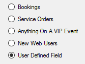

Send Confirmations
- Open a reservation in the Navigator.
- In the upper right corner of the Navigator, click Settings > Confirmation Settings. The Confirmation Settings dialog box opens.

Concept: Confirmations vs. Notifications: What's the Difference?
Confirmations
- These are either sent out automatically after a booking is made in EMS Web App, or manually from the EMS desktop client.
- They contain the date/time/resources for the booking that was created.
- These usually go to end users so they know when their event is and if they owe any money.
Notifications
- These are sent out automatically based on the filters on the notification rule:
- There are five types of notification rules:

- These are mostly sent out X days before a booking. They are triggered when a change occurs on a booking, service order, and so forth within that range of days.